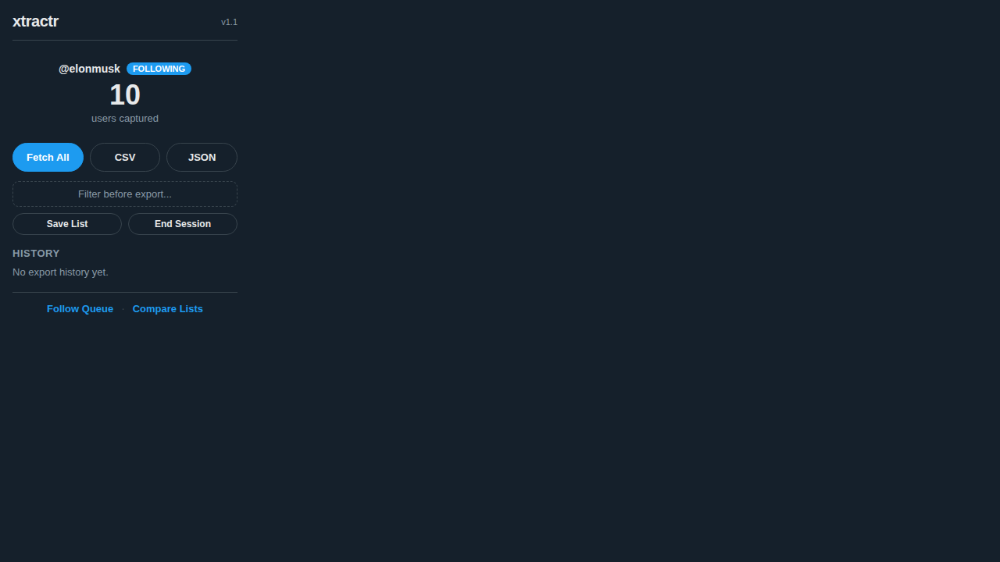
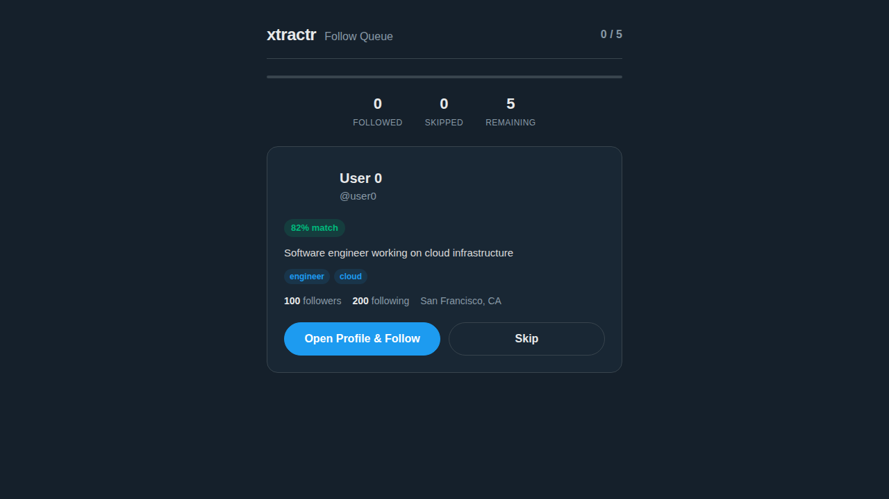
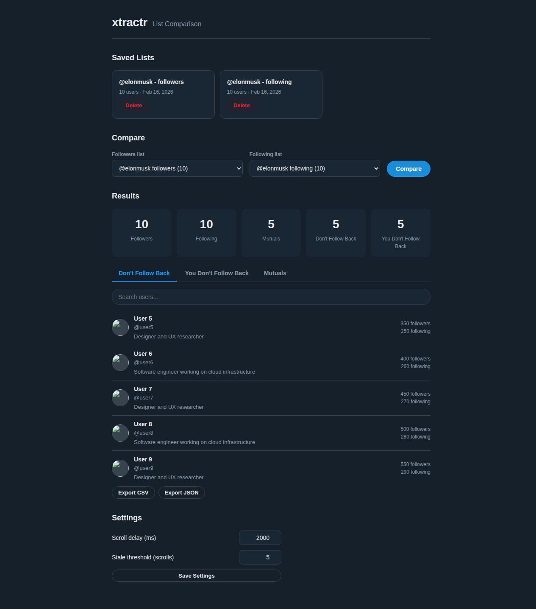

xtractr
Export X/Twitter followers and following lists to CSV or JSON. No API key needed.
What it does
xtractr is a Chrome extension that captures follower and following data as you browse X/Twitter. It intercepts the same API calls your browser already makes — no external servers, no API tokens, no subscriptions.
Features
- Automatic capture as you browse followers/following pages
- Fetch All to paginate through entire lists with rate-limit handling
- Export to CSV or JSON with timestamped filenames
- Advanced filtering with keyword stemming, follower ranges, and relevance scoring
- Industry presets for IT/Tech, Cybersecurity, Data/Analytics, and Design/UX
- Follow queue to review and follow filtered users one at a time
- List comparison to find mutuals and non-followers
- Fully local — all data stays in your browser
Screenshots

Popup showing an active capture session with 10 users captured

Follow queue page for reviewing and following users one at a time

Compare saved lists to find mutuals and non-followers